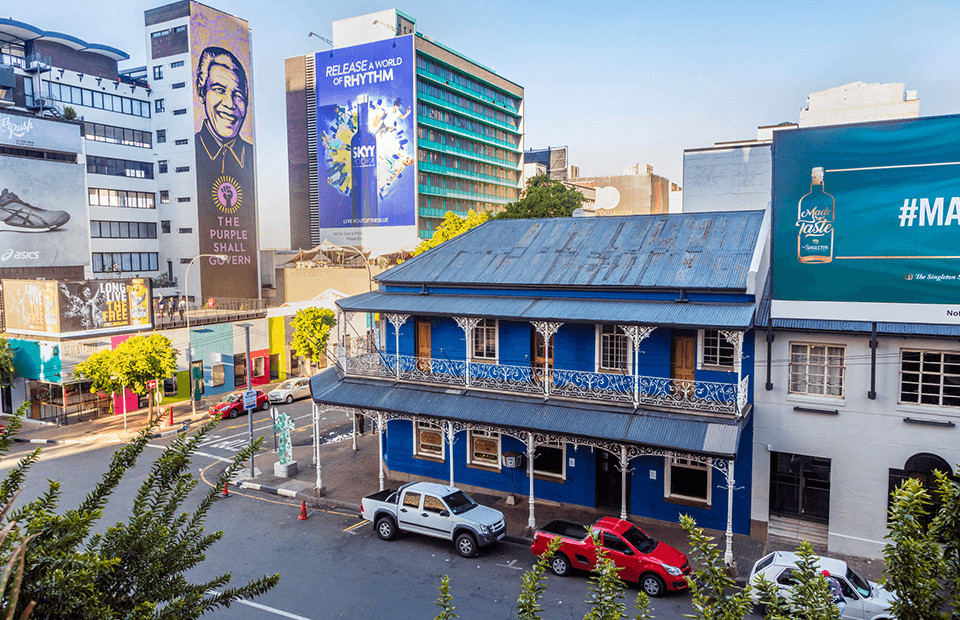
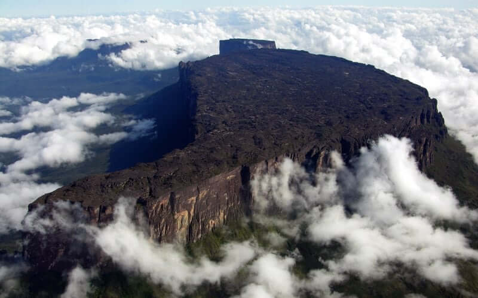
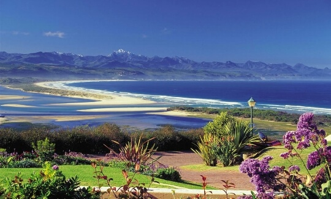
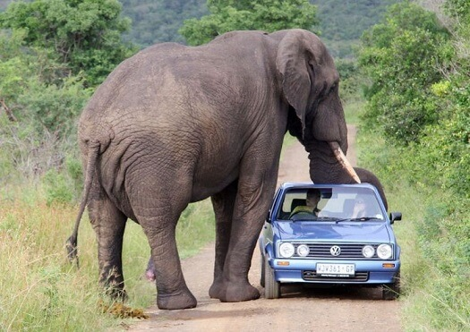
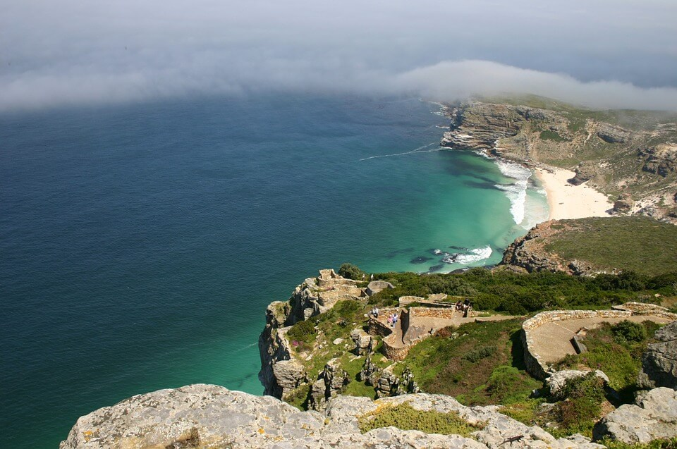

Південно-Африканська Республіка
Півде́нно-Африка́нська Респу́бліка, абревіатура ПАР (англ. Republic of South Africa) — держава на крайньому півдні Африки з 2798 км береговою лінією на Індійському та Атлантичному океанах. Вона межує на півночі з Намібією, Ботсваною і Зімбабве, і на північному сході з Есватіні і Мозамбіком. Лесото — анклав, який повністю оточений територією ПАР.
Кейптаун

Можна сказати, що весь Кейптаун - одна суцільна розвага. Це насправді курорт з різних боків:
є тут і відпочинок, що розслаблює, і нічні дискотеки та ресторани із стравами на будь-який смак.
Але є в місті особливі місця, які неодмінно треба обрати для відвідування із всього розмаїття
пропозицій:
- Ватерфронт - рай з великої кількості фешенебельных крамниць, ресторанів, театрів, готелів,
джазовых кафе;
- Blues Restaurant - найзнаменитіший у Кейптауні ресторан, де подають надзвичайні страви з
морепродуктів;
- Нічні клуби: Rhythm Divine, The Fez, Studio 47, and Rhodes House. У кожному з них своя
атмосфера, стиль та музыка.
Якщо ж від розкошів ви втомилися, варто сісти на велосипед та вирушити у незабутню двоколісну
прогулянку вздовж узбережжя!
Столова гора
Один із символів Кейптауна – це Столова гора (Table Mountain), висота якої 1087 метрів. На набережній Вікторії та Альфреда розташований величезний розважально-торговельний центр з кінотеатрами, магазинами, ресторанами, барами та готелями. Складно уявити, що колись це місце було брудною портовою спорудою. Унікальний Акваріум двох океанів є найбільшім не тільки в Африці, але й в усій Південній півкулі. Скляні міцні стіни возвеличуються на 11 метрів, та через них можна спостерігати за життям одного з найпрекрасніших світів – підводного світу.
Дорога садів
Гарден-Рут, або Дорога садів, довжиною 200 км простягається вздовж самого красивого Південно-Африканського узбережжя, через невеликі міста Витсанд, Стилбай і Альбертіна, Джордж, Седжфилд, через курортні міста Найсна і Плеттенберг-Бей, через незаймані зелені ліси парку Тсітсікамма - цю справжню чарівну країну гігантських дерев, папоротей і дивовижних птахів. Вершини скелястих гір хребта, що лежать уздовж берегової лінії, невеликі блакитні пляжі і бухти, яскраво забарвлені дикі квіти - все це радує око. Тут можна зайнятися підводним плаванням, альпінізмом, риболовлею або просто відпочити.
Національний парк Крюгера

Національний парк Крюгера розташований в Південній Африці. Ця заповідна територія є
однією з найстаріших та найвідоміших не лише на континенті але й в усьому світі. Територія
парку розкинулась на площі в 19 тис. кв. км. в північно-східній частині ПАР в межах провінцій
Мпумаланга та Лімпопо.
На території парку ростуть близько двох тисяч видів рослин, характерних для степів,
річкових долин, саван та передгір’їв. Серед представників рослинного світу тут можна
зустріти знаменитий баобаб, товщина стовбуру якого може досягати до 25 метрів. Також тут
мешкають близько п’ятсот видів птахів, більше як сто видів рептилій та близько сто
п’ятдесят видів ссавців.
Мис До́брої Наді́ї
Мис До́брої Наді́ї — скелястий мис, розташований у Південно-Африканській Республіці неподалік Кейптауна.Він не є найпівденнішою точкою Африки, але берегова лінія Африканського континенту тут уперше повертає на схід, відкриваючи прохід з Атлантичного океану в Індійський. Зараз мис Доброї Надії — крута скеля. У 1488 році мис Доброї Надії було відкрито португальським мореплавцем Бартоломеу Діашем і названо мисом Бур. Проте португальський король Жуан II перейменував мис, сподіваючись на те, що тоді вже було відкрито морський шлях до Індії.У 1497 році Вашку да Ґама, оминувши мис Доброї Надії, був першим європейцем, хто дійшов до Індійського океану. Уряд Португалії встановив два навігаційні маяки на честь Вашку да Ґами та Бартоломеу Діаша.6 квітня 1652 року на мис Доброї Надії прибула експедиція під керівництвом голландця Яна ван Рібека. Її метою було будівництво форту як тимчасового притулку для кораблів, що пливуть до Індії. Майбутній Кейптаун зводився поволі, допоки будівельникам не було надано право заводити власні ферми. Широко використовувалася і праця рабів. Коли через 10 років потому ван Рібек залишив мис, перше біле поселення в Південній Африці налічувало понад 100 колоністів.
Корисні посилання
- Іспанія
- Франція
- Канада
- Австралія
- Бразилія
- Аргентина
- Італія
- Індія
- ПАР
- Індонезія